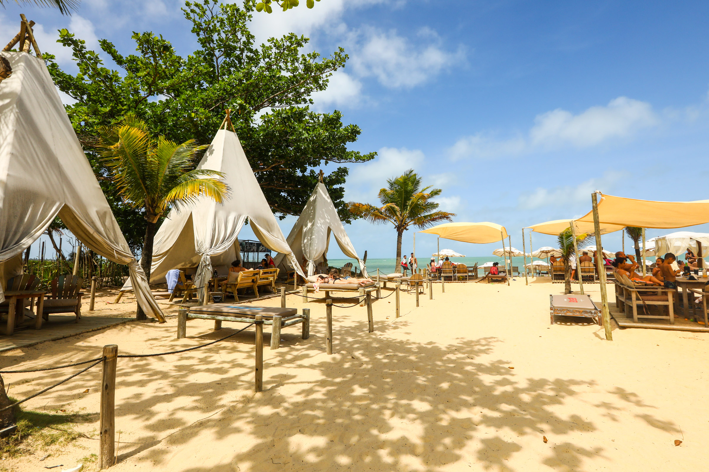

Apenas llegamos a Porto Seguro, dejamos todas las valijas en el hotel y fuimos a conocer Boa Beach. Esta playa fue el lugar más memorable ya que fue donde pasamos más tiempo. Ahí disfrutamos de los que para nosotras fueron los mejores días del viaje. Nos relajabamos tomando sol, nos metíamos al mar con amigos, nos hacíamos tatuajes de genna y mucho más. Sin duda hay dos momentos llenos de emoción en Boa Beach que recordaremos para siempre: el after del primer día, junto con la cena y charla de despedida